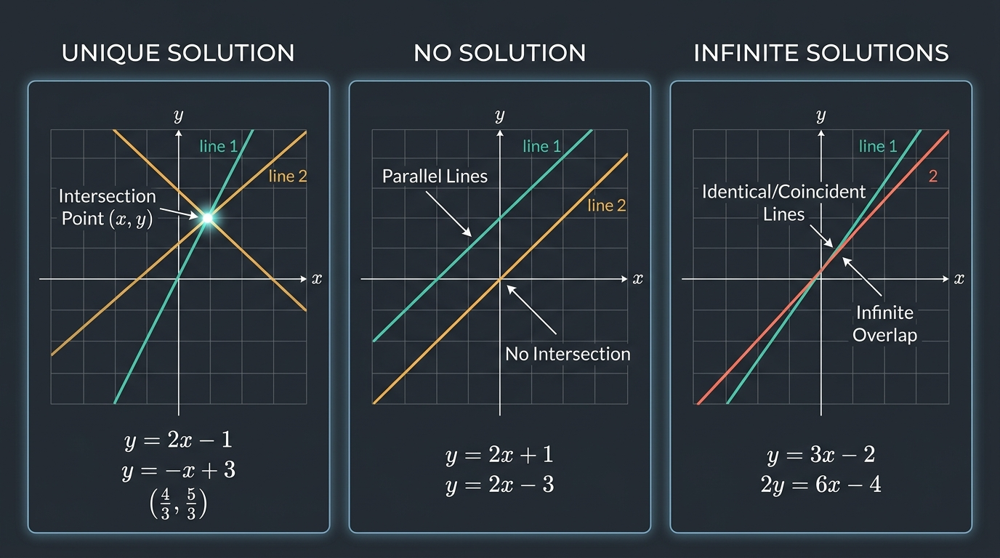

الدرس 0001
افتح الدرس التفاعلي ←
منظومات المعادلات الخطية (Linear Systems)
Systems of Linear Equations — which equation counts as linear?🗺️ الخارطة الهرمية للدرس 0001 · منظومات المعادلات الخطية
🌱 المحور: المعادلة الخطية $a_1 x_1 + \dots + a_n x_n = b$
💡 الفكرة والتشبيه البديهي
وصفة كعكة بمقادير مستقلة: كل متغير يدخل كجرعة مستقلة بالدرجة الأولى دون أي تشابك.
- ↳ التشبيه: طحين + سكر = طبق، بلا تربيع ولا ضرب للمكونات ببعضها
- ↳ هندسياً: خط مستقيم منبسط في $\mathbb{R}^2$ أو مستوى أملس في $\mathbb{R}^3$
⚖️ الشروط والقواعد الصارمة
شروط الخطية الثلاثة الصارمة — سقوط أي شرط يخرج المعادلة من المنهج الخطي!
- ↳ الأس = 1 فقط: ممنوع $x^2$ أو $\sqrt{x}$ أو $x^{-1}$
- ↳ حظر الدوال: ممنوع $\sin(x)$ أو $e^x$ أو $\ln(x)$
- ↳ حظر الضرب المشترك: ممنوع ضرب متغيرين كـ $x y$ أو $x_1 x_2$
⚙️ خوارزمية الحل الإجرائي
بناء المصفوفة الموسعة $[A \mid b]$ لعزل المعاملات في جدول أرقام تنفيذي.
- ↳ خطوة 1: ترتيب المتغيرات في أعمدة متناظرة عمودياً
- ↳ خطوة 2: ترحيل الثوابت المجردة إلى يمين علامة المساواة
- ↳ خطوة 3: تفريغ المعاملات في مصفوفة موسعة تمهيداً للحذف
🌟 الثمرة والربط الشامل
حسم مصير المنظومة فورياً إلى إحدى الحالات الهندسية الثلاث الحاسمة:
- ↳ حل وحيد: تقاطع صريح في نقطة واحدة (المحدد $\neq 0$)
- ↳ لانهائي: مستقيمات متطابقة (وجود متغير حر Free Variable)
- ↳ مستحيل: مستقيمات متوازية لا تلتقي (ظهور صف $0 = b$)

تشبيه فاينمان (وصفة المطبخ): المعادلة الخطية مثل وصفة كعكة بسيطة: "كوبان طحين + بيضتان = طبق". كل مكوّن يظهر بمفرده وقوته 1. أما إذا ضربت "طحين × سكر" أو وضعت "بيض تربيع"، تغير التفاعل وخرجت عن المطبخ الخطي!
القاعدة الذهبية (حكم الـ 10 ثوانٍ):
$$a_1 x_1 + a_2 x_2 + \dots + a_n x_n = b$$
أس كل مجهول 1، المعاملات $a_i$ والثابت $b$ ثوابت عددية مسموحة بأي شكل، وممنوع ضرب أي مجهولين معاً أو إدخال مجهول داخل دالة.
📌 مثال تطبيقي محلول خطوة بخطوة: فحص الخطية وتمييز الأفخاخ
خطوة بخطوة بالأسهم والدوائراحكم على المعادلات التالية مع الإشارة بدائرة إلى المكون الفاصل وسبب الحكم:
1
المعادلة الأولى: $3x_1 + 2x_2 - 5x_3 = 8$
فحص المكونات ➔ كل مجهول أسّه 1، ولا يوجد ضرب متغيرات.
✓ الحكم: خطية تماماً.
فحص المكونات ➔ كل مجهول أسّه 1، ولا يوجد ضرب متغيرات.
✓ الحكم: خطية تماماً.
2
المعادلة الثانية (الفخ): $2y - \sin\pi = 6$
تحديد المكون الحاسم ➔ انتبه إلى الحد $\sin\pi$
↓ الدالة المثلثية دخلت على عدد ثابت ($\pi$) وليس على مجهول: $\sin\pi = 0$.
المعادلة تكافئ: $2y - 0 = 6 \implies 2y = 6$.
✓ الحكم: خطية (الثوابت مسموحة مهما بدت غريبة).
تحديد المكون الحاسم ➔ انتبه إلى الحد $\sin\pi$
↓ الدالة المثلثية دخلت على عدد ثابت ($\pi$) وليس على مجهول: $\sin\pi = 0$.
المعادلة تكافئ: $2y - 0 = 6 \implies 2y = 6$.
✓ الحكم: خطية (الثوابت مسموحة مهما بدت غريبة).
3
المعادلة الثالثة: $x + 2y - xz = 4$
تحديد المكون المخالف ➔ الدائرة تشير إلى xz
↓ حاصل ضرب متغيرين مجهولين $x \cdot z$ يرفع درجة الحد إلى الدرجة الثانية!
✗ الحكم: ليست خطية (Nonlinear).
تحديد المكون المخالف ➔ الدائرة تشير إلى xz
↓ حاصل ضرب متغيرين مجهولين $x \cdot z$ يرفع درجة الحد إلى الدرجة الثانية!
✗ الحكم: ليست خطية (Nonlinear).
اختبار الـ 10 ثوانٍ: هل المعادلة $\sqrt{x} + 2y = 5$ خطية؟
ليست خطية! لأن الجذر التربيعي يعني أن أس المتغير هو $\frac{1}{2}$ وليس $1$.